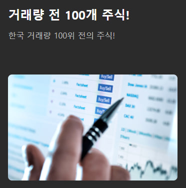
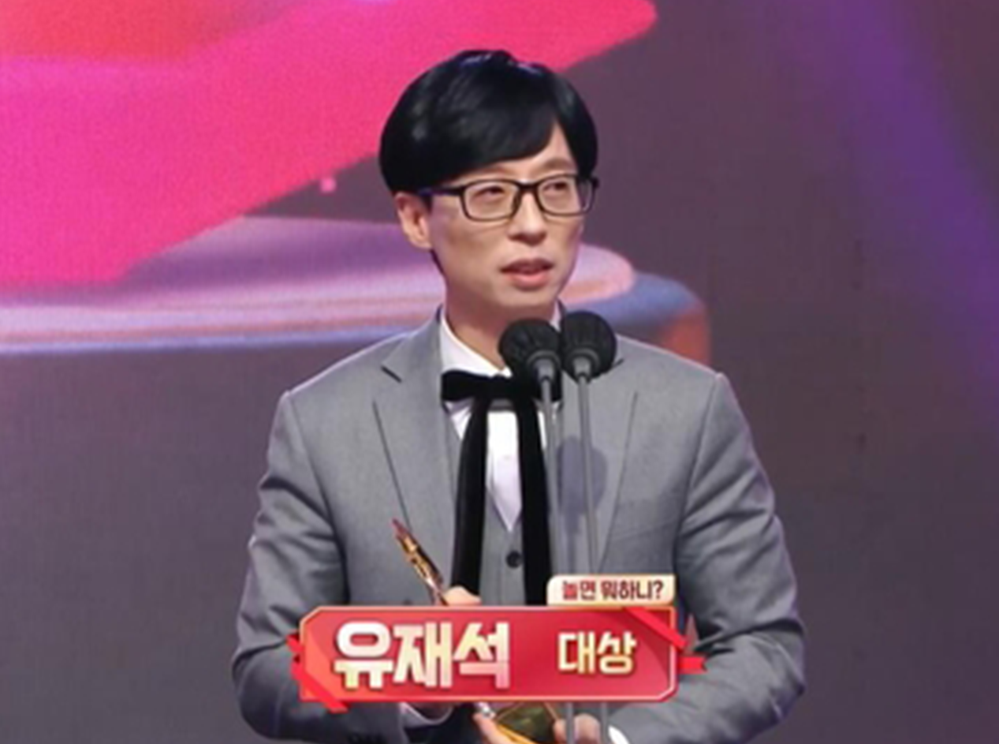
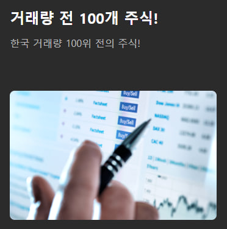
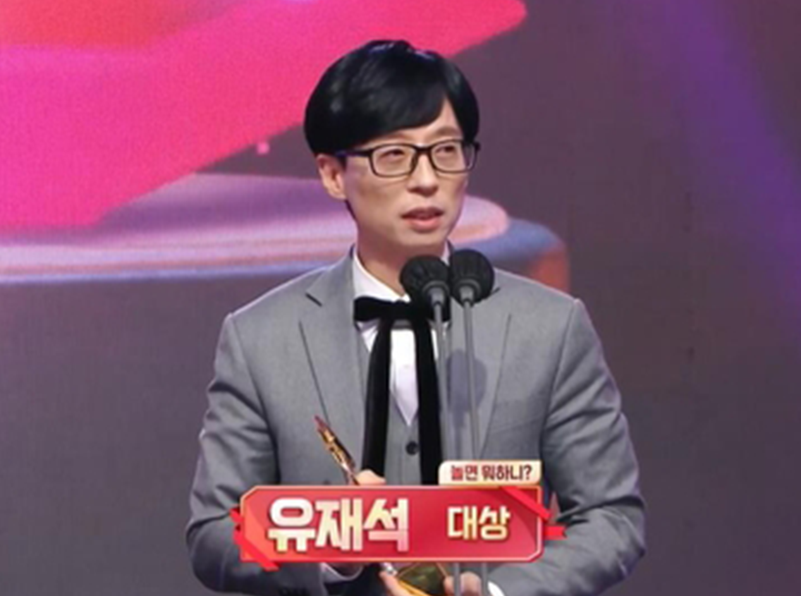

안녕하세요, 저는 유재석, Jae Suk Yoo. 대한민국의 코미디언. 대한민국의 경제학자입니다. 경제 동영상 사이트.한국의 인당 국민소득은 매우 높지만, 빈부 격차가 점점 더 벌어지고 있다는 사실은 모두가 알고 있습니다. 이념적 제한으로 인해 한국의 일반 국민의 생활비는 매우 높습니다. 노동계급, 특히 젊은이들은 많은 압박을 받고 있고, 생활이 매우 어렵고, 탈출구가 많지 않으며, 승진의 기회가 제한되어 있고, 사업 환경도 매우 열악합니다.그래서 열심히 주식투자를 배워 전문투자자가 되었고, 공부한 지 2년 만에 50억 원을 벌었습니다.
코로나19 사태 이후 경제 전체가 침체기에 접어들어 감히 상업 공연을 할 수 없었고, 매일 집에서 쉬며 심심한 시간을 보내며 투자금을 구경할 수 밖에 없었습니다. 재정적 손실을 만회할 투자 기회를 찾을 수 있는지 알아보기 위해 시장에서 우연히 SBVA 창립자인 Li Junbiao를 만났습니다. 그 사장은 나의 성과를 매우 좋아했기 때문에 나와 협력하기를 원했고, 그들의 애널리스트 팀에 합류하여 그들 중 하나가 되도록 초대하고 싶었습니다. 그들의 팀의 노력으로 나도 세계적으로 유명한 투자 기관과 일했습니다. 그들의 전폭적인 지도 하에 나는 마침내 내 노력으로 마침내 그들의 회사의 주주가 되었습니다. 이번에 나는 그들의 회사에서 개최한 3분기 투자 교류 및 학습 컨퍼런스에 응답하여 일반 대중은 회사가 진행하는 자선 활동에 적극적으로 참여하여 회사와 교류 및 학습 그룹을 공동으로 만들었습니다. Li Junbiao 수석 분석가가 전문 팀과 함께 여러분을 안내할 것입니다. 우리는 재투자에 있어 큰 성과를 거두었습니다. 동시에 모든 사람이 우리의 자선 활동을 지원할 수 있기를 바랍니다. 우리는 더 많은 자선 활동을 하고 우리와 같은 도움이 필요한 사람들을 도울 수 있습니다.
⚠️ 특별 안내: 유료 그룹 가입을 요구하는 모든 것은 사기입니다.
🔥 저는 무료로 주식 애호가 교류 그룹을 만들었습니다.
어떤 투자를 하더라도 경제에 대한 기본지식, 경제 흐름에 대한 이해가 전제돼 있어야 해요.싫든 좋든 간에 어쩔 수 없이 자본주의를 살아가야 하는 우리에게 재테크 공부는 선택이 아닌 필수라고 생각한다.방법이 있다는 전제하에 주식 투자로 얻는 수익은 힘들게 출근해 얻은 월급의 수십, 수백 배입니다.사람은 항상 출근할 수 없습니다, 현재의 곤경에서 벗어나기 위해 무언가를 해야 합니다, 그렇지 않으면 당신이 늙었을 때 당신은 계속 일할 수 있습니까?직장에서의 급여는 가족과 함께 살기에 충분합니까? 이제, 저는 제 방법을 무료로 공유하기로 결정했습니다. 저는 당신이 어떻게 주식에 투자해야 돈을 벌 수 있는지 차근차근 가르쳐 줄 것입니다. 왜냐하면 이것은 기술이 있고 배우기 쉽기 때문입니다.
동시에 주식투자를 통해 대한민국 국민이라면 누구나 얻을 수 있는 수익을 창출하여 대한민국 금융시장경제를 활성화하고 국민의 삶의 행복을 높이고 싶습니다.
주식투자 성공률 99% 방법을 알려드릴테니 밴드추가를 눌러주시면 보내드리겠습니다. 잃을 것은 없지만 기회를 놓치면 진짜 손해다
⚠️ 내 밴드에 추가하려면 아래 버튼을 클릭하세요! "33"을 보내주시면 5월에 급등한 종목 3개를 드립니다! 이들 3개 급상승 종목의 이익은 80% 이상에 이를 것으로 예상된다. 오늘 선착순 300명의 투자자는 내 투자 커뮤니티의 VIP 회원이 되며, 각 투자자는 일대일 상담 기회를 받게 됩니다.
🔥 저는 무료로 주식 애호가 교류 그룹을 만들었습니다.
🔥이미 일부 회원은 1.2.3분기에 400% 이상의 총 수익률을 달성했습니다. 1월 말 기준으로 우리 회원 중 절반 이상이 주간 400% 수익률을 달성했습니다. 회원 전원의 주간 평균 복리는 368%!
🔥 지난주에 제가 추천한 주식이 420% 올랐는데 이건 돈 줍는 거나 다름없어요.주식을 통해 조기 퇴직할 수 있다고 하면 믿을 수 있습니까?많은 분들이 믿지 않으실 거라고 생각하시지만 사실이고 제 재산은 그렇게 쌓여 있습니다.
🔥 38,000명이 넘는 사람들이 무료로 혜택을 받았고, 장소 수는 제한되어 있습니다.
이것은 내 팀입니다. 현재 투자채팅방에서 어시스턴트로 일하고 있습니다. 업무가 바쁘다면 밴드에 도우미를 추가하고 채팅방에 참여할 수 있습니다. 신규 채팅방 등록시 우량주 3종을 무료로 드립니다. 우리는 당신을 만나기를 기대합니다!
⚠️ 내 밴드에 추가하려면 아래 버튼을 클릭하세요! "33"을 보내주시면 5월에 급등한 종목 3개를 드립니다! 이들 3개 급상승 종목의 이익은 80% 이상에 이를 것으로 예상된다. 오늘 선착순 300명의 투자자는 내 투자 커뮤니티의 VIP 회원이 되며, 각 투자자는 일대일 상담 기회를 받게 됩니다.
무엇을 얻어갈 수 있나요?
 



즉시 유재석의 투자 커뮤니티에 무료로 가입하세요.
저는 주식 시장에 대한 몇 가지 중요한 통찰력을 공유하고 싶습니다.
1: 시장은 변동성이 크며 더 이상 인내심을 갖고 연구하고 기다릴 시간이 없습니다.
2: 정보가 부족합니다. 대부분의 사람들은 정확한 시장 정보를 얻을 수 없기 때문에 정보에 입각한 결정을 내릴 수 없기 때문입니다.
3: 심리적 압박 투자에 대한 욕심과 두려움 때문에 더 잘 대응할 방법이 없습니다.
4: 위험 관리 위험 관리는 투자의 핵심입니다. 레버리지를 현명하게 사용하지 않으면 더 큰 손실을 초래할 수 있습니다.
"⚠️ 내 밴드에 추가하려면 아래 버튼을 클릭하세요! "33"을 보내주시면 5월에 급등한 종목 3개를 드립니다! 이들 3개 급상승 종목의 이익은 80% 이상에 이를 것으로 예상된다. 오늘 선착순 300명의 투자자는 내 투자 커뮤니티의 VIP 회원이 되며, 각 투자자는 일대일 상담 기회를 받게 됩니다.
🔥 38,000명이 넘는 사람들이 무료로 혜택을 받았고, 장소 수는 제한되어 있습니다.
지금 바로 저희 단톡방 조수님을 추가하신다면 , 단톡방 즉시 가입하실수 있고 3개의 폭등주도 수령하실수가 있습니다 .